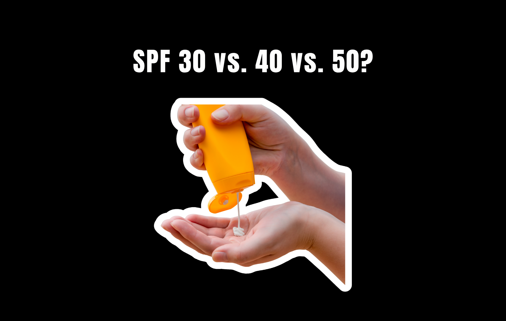

If you’re shopping for sunscreen, there’s a big chance that your eyes are automatically drawn towards the SPF numbers. SPF 30, 40, 50, it’s only right that you pick the largest number, as that provides the largest amount of coverage, right?
Not exactly. In reality, the three numbers of 30, 40, 50 don’t have that much of a difference. Here’s what the real difference is.
What Does SPF Actually Mean?
First, let’s clear up what SPF actually measures.
SPF stands for Sun Protection Factor, and it primarily tells you how well a sunscreen protects against UVB radiation, the type of UV radiation that is largely responsible for sunburn. It does not mean how many hours you can stay in the sun, and an SPF 50 sunscreen does not mean you can stay outside 50 times longer than you could without sunscreen.
The number is essentially a measurement of how much UV exposure it takes to cause sunburn on sunscreen-protected skin compared with unprotected skin.
And this is where things get interesting. Because SPF 30 isn’t giving you 30% protection, and SPF 50 isn’t giving you 50% protection. The relationship between the number and the amount of UVB filtered is not linear.
So, What’s the Difference Between SPF 30, 40, and 50?
Under standardized testing conditions, SPF 30 filters approximately 97% of UVB rays. SPF 50 filters approximately 98%. SPF 40 falls between the two, at roughly 97.5%.
That means the difference looks something like this:
- SPF 30 → ~97% filtered
- SPF 40 → ~97.5% filtered
- SPF 50 → ~98% filtered
So yes, SPF 50 does provide more UVB protection than SPF 30. But the difference is much smaller than the numbers on the bottles make it sound.
Going from SPF 30 to SPF 50 isn’t going from 30% protection to 50% protection. You’re going from approximately 97% of UVB filtered to approximately 98%. That’s still an improvement, but it’s a relatively small one.
And this is why dermatologists generally recommend choosing a broad-spectrum sunscreen with SPF 30 or higher, rather than suggesting that everyone needs to chase the highest SPF available.
Think Less About the Number, More About the Routine
If you’re someone who prefers SPF 50, there’s absolutely nothing wrong with that. In fact, a higher SPF can provide an additional margin of protection, which can be useful, particularly because people often don’t apply enough sunscreen in real life.
But if your favorite sunscreen is SPF 30, you don’t need to panic that you’ve made a terrible skincare decision. SPF 30 is still considered an effective level of protection when applied correctly. The bigger question is whether you’re actually applying enough. And that’s where things start to get a little more important than the number on the bottle.
A general rule of thumb is to squeeze sunscreen on two of your fingers, which averages about ¼ of a teaspoon, the recommended amount for your face and neck.
The Biggest Mistake: Using Less Because It’s SPF 50
Here’s one of the biggest sunscreen mistakes you can make:
Unfortunately, that’s not how SPF works. The SPF listed on your sunscreen is based on standardized testing where the product is applied at a specific amount — 2 milligrams of sunscreen per square centimeter of skin. In other words, that SPF 50 on the bottle doesn’t mean you’re automatically getting SPF 50 protection no matter how much you put on.
You have to actually apply enough to achieve the protection that was measured during testing. And this is especially important because most people don’t use enough sunscreen to begin with. The American Academy of Dermatology notes that people commonly apply only about 20–50% of the amount needed to achieve the SPF stated on the label.
So if you normally apply a certain amount of SPF 30 to your face, don’t suddenly use half that amount when you switch to SPF 50. Higher SPF does not mean you need less sunscreen. The amount you apply should stay essentially the same.
More SPF ≠ Less Sunscreen
You have SPF 30. You apply your usual amount. Then you buy SPF 50. You should still apply your usual amount. The SPF number tells you the protection level when the product is used as directed. It isn’t a measurement of how much product you need.
And using less of a higher-SPF sunscreen can completely undermine the reason you bought it in the first place. The American Academy of Dermatology recommends approximately 1 ounce of sunscreen — about a shot-glassful — for the exposed skin of an average adult’s body. For the face, it recommends at least enough to cover the length of your index and middle fingers. So don’t let “SPF 50” trick you into thinking a tiny dab is suddenly enough.
The SPF Number Isn’t the Whole Story
There’s another reason we shouldn’t obsess over the number.
SPF primarily measures protection from UVB, not the entire spectrum of UV radiation. That’s why you should also look for the words “broad spectrum” on your sunscreen, which indicates protection against both UVA and UVB radiation.
And sunscreen isn’t meant to be applied once in the morning and forgotten about for the rest of the day.
When you’re outdoors, dermatologists recommend reapplying approximately every two hours and after swimming or sweating.
So if you’re spending five minutes comparing SPF 40 and SPF 50 while ignoring whether your sunscreen is broad-spectrum or whether you’re applying enough of it, you’re probably focusing on the wrong part of the label.
The Bottom Line
We’re not saying SPF 30, 40, and 50 are exactly the same. They’re not. SPF 50 provides more UVB protection than SPF 30. But the difference is much smaller than the numbers suggest: approximately 97% of UVB filtered by SPF 30 versus approximately 98% by SPF 50 under standardized testing.
What matters more is how you use your sunscreen. Choose at least SPF 30. Look for broad-spectrum protection. Apply enough. Reapply when necessary. And most importantly, don’t use less sunscreen just because you’ve upgraded from SPF 30 to SPF 50.
It’s a higher level of protection from the same properly applied amount. The number on the bottle matters. But how much sunscreen actually ends up on your skin matters, too.
Sources: American Academy of Dermatology. How to Apply Sunscreen. aad.org · American Academy of Dermatology. Sunscreen FAQs. aad.org · U.S. Food and Drug Administration. Sunscreen: How to Help Protect Your Skin from the Sun. fda.gov